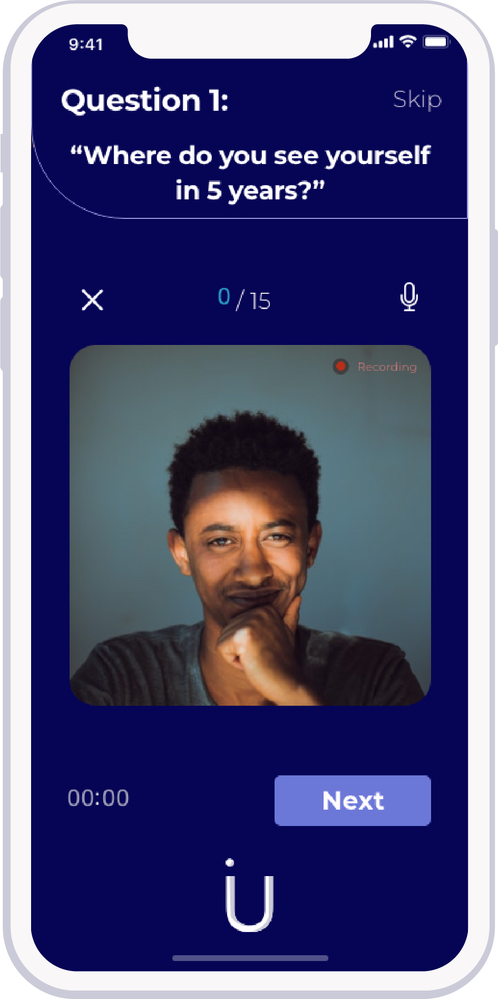
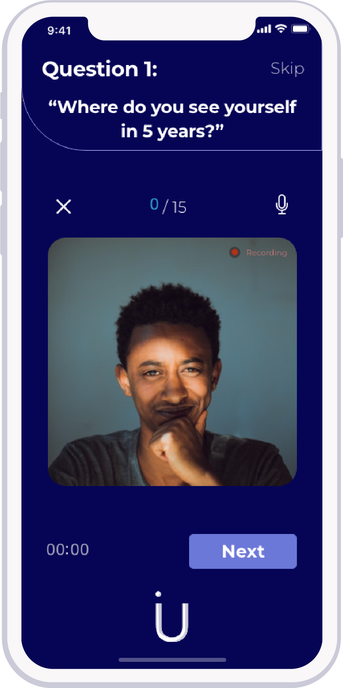
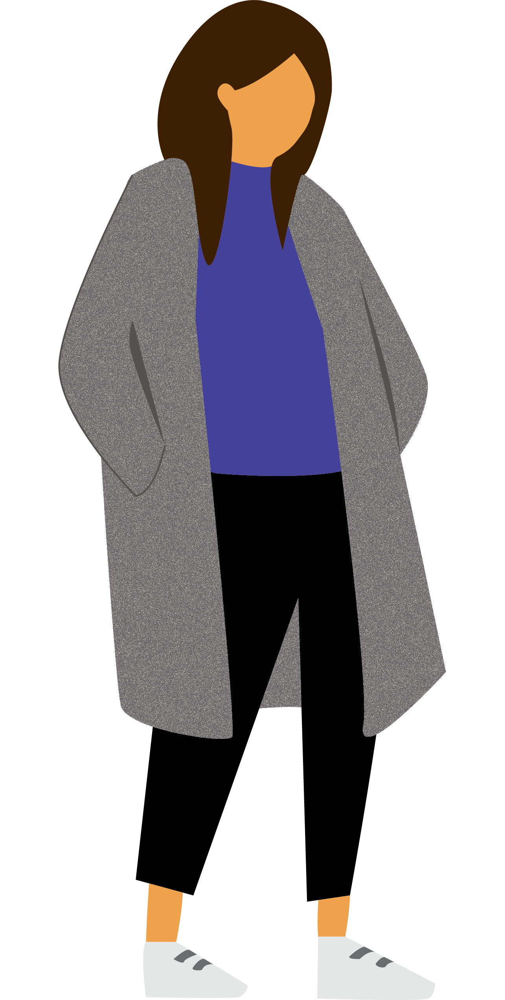

Role
- UI/UX design
- Research
- Paper Prototyping
- Usability Testing
- High Fidelity Mockups
Duration
- 6 Weeks
Client
- Student Project
How do I express my value to future employers when I have no experience?
This is a question many university students find asking themselves as they near the end of their degree. Competition is fierce and with an estimated 1.7M students enrolled in postsecondary education it can often feel overwhelming trying to find your place in this cold world. (brr)
Interviews are the ultimate question of ones value. How do you sell yourself? How do you convince someone that they should pay you money and invest time in you? How do you stand out against the thousands of other applicants? If you decide to keep reading I am going to answer those for you. Well, try to at least.
Voila!
The ultimate interview prep mobile app. Interview U allows you to hone your skills so you can start making the big bucks!
One of the best ways to improve in all aspects of expression whether it be athletic, vocal or perforamce is to record yourself. This premise is what kicked off the project. There are no real metrics to know how you did in interviews, you either get the job or you don’t.
In order to mitigate this pain point and help thousands get tangible feedback on their performance came the idea of Interview U: the app that allows playback and saving your responses to questions in order to see areas of improvement.
Onboarding
The onboarding is designed to be easy and efficient while effectively gathering the data necesary to tailor the interviews for the individual specific goals and background. The app is targeted towrads commerce students.
- University will give you location and general vicinity
- Focus of study is for Commerce students: feedback made it clear to narrow down scope
- Career goal narrows down what type of job interviewees are going to be looking for so this will also help give relevant and more specified questions
Home
Record
Practice
 

Review
Menu

Progress
By screen capturing your performance you can replay it back and see where you can improve. Interview U also keeps track of how many times you say like and um, sooo um like please don’t use these anymore.
By screen capturing your performance you can replay it back and see where you can improve. Interview U also keeps track of how many times you say like and um, sooo um like please don’t use these anymore.
Ideation
Card Sorting
The premise of the project began with the umbrella topic of marketing. Through the process of cardsorting it became narrowed down to marketing of oneself, an easier task said than done. Card sorting was a useful exercise to do collaboratively as it became evident when certain patterns emerged through similar clusters. It was also a great opportunity to interview my peers casually about their thoughts on the matter.
I found through interviewing my peers on of their greatest pain points is being asked how they provide value. As individuals with limited professional experience it can often be difficult to feel one's worth. Segwaying from this topic comes the issues of interviews.
Key Takeaways
- There is a lot of jargon in business
- lot of people didn’t know some of the terms
- There is a lot of negative connotations surrounding marketing
- Most people thought marketing is about sales and making money
- When asked about personal marketing they didn’t really know how to answer
- There was a pattern regarding a difficulty discussing personal value
- Talking about your value is marketing yourself
- Interviews is one of the greatest instances of practicing personal marketing
- Big pain point when you have limited experience/ just getting out of university
Affinity Mapping
The premise of the project began with the umbrella topic of marketing. Through the process of cardsorting it became narrowed down to marketing of oneself, an easier task said than done. Card sorting was a useful exercise to do collaboratively as it became evident when certain patterns emerged through similar clusters. It was also a great opportunity to interview my peers casually about their thoughts on the matter.
I found through interviewing my peers on of their greatest pain points is being asked how they provide value. As individuals with limited professional experience it can often be difficult to feel one's worth. Segwaying from this topic comes the issues of interviews.
Key Takeaways
- There is a lot of jargon in business
- lot of people didn’t know some of the terms
- There is a lot of negative connotations surrounding marketing
- Most people thought marketing is about sales and making money
- When asked about personal marketing they didn’t really know how to answer
- There was a pattern regarding a difficulty discussing personal value
- Talking about your value is marketing yourself
- Interviews is one of the greatest instances of practicing personal marketing
- Big pain point when you have limited experience/ just getting out of university
User
Sophie
Human Resources Undergrad
About
Age 18-24
Something
Something
Commerce Student
info goes here about the commerce student or sometingaosdfkasdffldf asdfkjfkdjthisdfj
Interview Motivation
- Money
- Personal Growth
- Experience
- Networking
- Career Path
Motivations
information goes here about this imaginary persons motivations
Core Needs
information goes here about this imagineary persons core needs
Pain Points
I dont know what pain points means but im guessing its a typo and well figure that out later
Value
Value Proposition Diagram
Multiple people pointed out that they wished they had the ability to watch themselves practice questions before they had interviews. Also having the ability to a measurable metrics which displayed progress important. There are too many features so next steps where to narrow down further
Key Takeaways
- Focused on the pain point of not being able to know how you did. there is no metric
- You either get the job or you don’t
- This will hopefully be a way to alleviate some of this and point out areas for you to improve
Usability Testing
User Testing & Paper Prototyping
Paper prototyping was an incredibly valuable exercise to really work out the flow of my app. It became evident that there was too many functions. User Testing provided a lot of insights as to the layout of my wireframes and additional features that would aid in the ease of use of my app. It was mentioned that there were too many features including both parties: interviewer and interviewee.
Key Takeaways
- Too many functions!
- Feasibility was a huge concern
- It was difficult to navigate
- Users expressed positive feedback regarding having the ability to see themselves after interview to see there nervous ticks**
- Onboarding was too long how were interviews going to be saved? ~by category or by session number
Interview
Officehours.io session with Eric Karjaluoto
Through the use of officehours.io I was given the incredible opportunity to speak with industry expert and founder of officehours.io, Eric Karjaluoto regarding my project (officehours.io is an incredible resource for getting insight, feedback and advice). As my app was initially going to be a similar setup to officehours.io itself, Eric was an invaluable resource and provided me with some extremely important insights. After briefly explaining my concept Eric pointed out that while it’s a good idea it is incredibly difficult to convey value to the target audience. He encouraged me to narrow my target audience from University students even further. Eric pointed out that if you are able to convey value to a specific target audience first, you can always grow later. From this feedback I decided to narrow down my target audience from University to Commerce students; with the possibility of even narrowing it down further pending user testing.
The next piece of knowledge Eric imparted on me was that users want the easiest experience possible. My initial idea was too complex and that by looking for ways to simplify it could greatly increase its potential for success. Eric mentioned that one of the biggest barriers I would face is having both parties show up for interviews. It is important to look at the demographic and if it’s already difficult to have them talk on the phone, having them consistently show up for scheduled FaceTime interviews would be quite a challenge. Individuals expectations are very high. In this situation with setting up meetings between two parties there is a large amount of room for let down expectations. Essentially it’s a huge opportunity for disappointment from users having their practice interviews cancelled or the other party not showing up. From this he asked me to consider potentially taking some of the tech aspects out of it and looking for ways to encourage students to meet in real life, potentially have scheduled phone calls, bring the interview to the user or have university groups that are compulsory. Eric really made me consider my projects solution in an entirely different light. I have decided to take the FaceTime aspect out of my app and I am currently pursuing how I might integrate these into my app to make it a much better user experience.
Eric also asked me to consider the feedback I was receiving. From his experience feedback like “oh that sounds cool” and “that’d be nice to have” may in theory be good ideas but in execution are not always successful. Despite something sounding nice it is really important to be able to actually deliver an experience that seamlessly fits into users busy lives. It is important to take time to reflect on the idea itself and narrow down the specific interview skills people really need and focus on those.
Key Takeaways •Narrow down target audience. •Keep it focused. •Is there an easier way to do it?